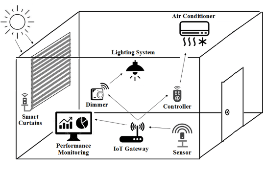
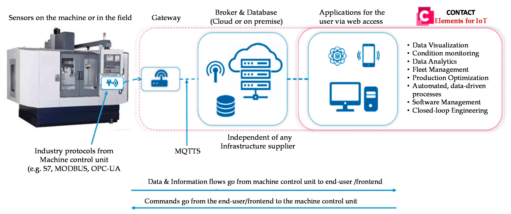
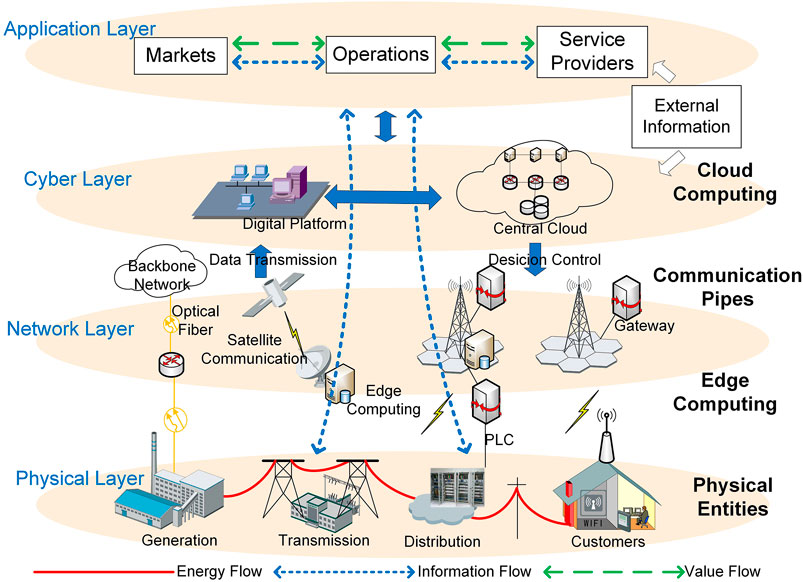
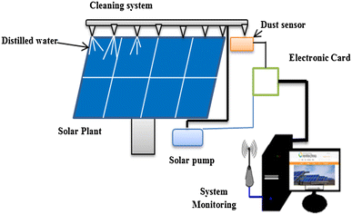
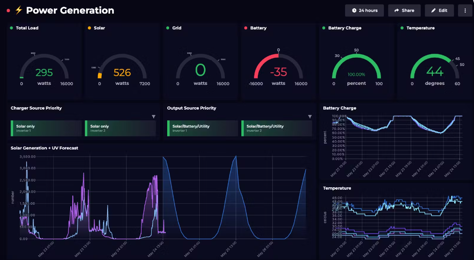
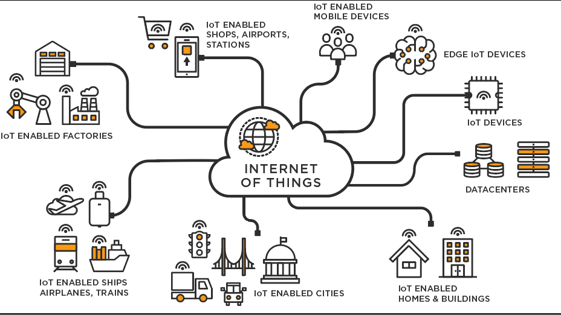

HOW INTERNET OF THINGS (IOT) CONTRIBUTE TO SMART ENERGY MANAGEMENT IN HOME AND INDUSTRIES
Introduction:
The Internet of Things (IoT) has become a revolutionary force in the realm of technology, transforming the way we live and work. One of the most impactful areas where IoT has made significant strides is in smart energy management. In this article, we will explore how IoT contributes to optimizing energy consumption in both homes and industries, paving the way for a more sustainable and efficient future.
1. Smart Home Energy Management:
In homes, IoT devices play a crucial role in monitoring and controlling energy usage. Smart thermostats, for example, leverage IoT technology to learn user behavior and adjust heating or cooling systems accordingly. Smart lighting systems equipped with IoT sensors can detect occupancy and adjust lighting levels, contributing to substantial energy savings.

2. IoT-Enabled Industrial Energy Efficiency:
Industries face unique challenges in managing energy consumption due to complex machinery and large-scale operations. IoT sensors integrated into manufacturing equipment can provide real-time data on energy usage, helping industries identify inefficiencies and optimize their processes.

3. Demand Response and Grid Management:
IoT plays a pivotal role in demand response programs, allowing utility companies to manage electricity consumption during peak times. Smart appliances in homes and industries can communicate with the grid, enabling automated load shedding or shifting non-urgent tasks to off-peak hours.

4. Predictive Maintenance for Energy Equipment:
Another significant contribution of IoT in energy management is predictive maintenance. Sensors on energy equipment can collect data on performance metrics, enabling early detection of potential issues. This proactive approach reduces downtime and ensures the efficient operation of energy infrastructure.

5. Energy Consumption Analytics:
IoT devices generate a vast amount of data related to energy consumption patterns. Analytics platforms process this data, providing valuable insights for homeowners and industries alike. This data-driven approach allows for informed decision-making to further enhance energy efficiency.

Conclusion:
The Internet of Things has emerged as a game-changer in the quest for smarter and more sustainable energy management. From optimizing home environments to revolutionizing industrial processes, IoT's impact on energy efficiency is profound. As we continue to embrace these technologies, the path to a greener and more energy-conscious future becomes increasingly attainable.
